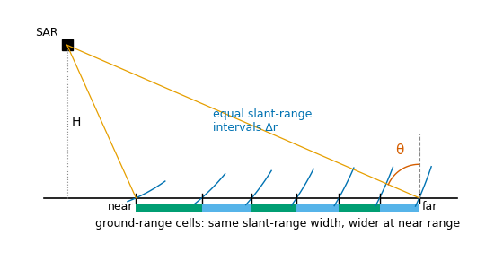
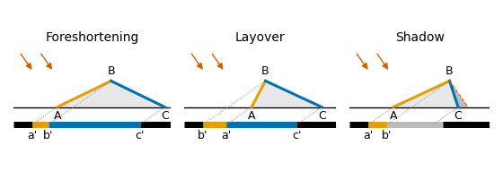

| SAR Concepts: SAR Geometry and Geometric Distortions | |
A SAR image is laid out by distance from the sensor and time along the orbit, not by map position. Relief therefore moves, squeezes, folds or hides parts of the scene. Knowing these effects tells you which pixels you can trust after terrain correction, and when an ellipsoid correction is enough.
Every image pixel has two coordinates: an azimuth time t and a slant range R. Most products are focused to zero Doppler: a target is placed at the azimuth time when it is closest to the sensor, which is when the line of sight is perpendicular to the platform velocity. A ground point P is therefore imaged where both conditions hold:
|S(t) − P| = R
(S(t) − P) · V(t) = 0
S(t) and V(t) are the sensor position and velocity from the orbit, and P is the target position in Earth-fixed coordinates. Geocoding solves these equations for each pixel. The accuracy depends on the orbit, the timing annotation and the target height (see DEMs and height references and Orbits and ETAD).
The radar samples equal steps in slant range. On flat ground, a slant-range step Δr covers a ground-range step
Δg = Δr / sin θ
where θ is the incidence angle. Because θ grows across the swath, ground cells are wider at near range than at far range (Figure 1). GRD products are already resampled to ground range on an ellipsoid; SLC products are in slant range.

Figure 1. Equal slant-range intervals (blue arcs) meet flat ground in cells that shrink from near to far range. θ is the incidence angle at far range.
Because the image is ordered by slant range, a point's height shifts it toward the sensor. With α the slope facing the sensor and β the slope facing away (Figure 2):
Steep incidence (small θ) causes more layover; shallow incidence (large θ) causes more shadow. No processing restores information lost to layover or shadow; it can only be masked or filled from another geometry.

Figure 2. A hill seen by a radar looking from the left at θ = 35°. Dotted lines are lines of equal slant range. The bar under each hill is the radar image: a', b', c' are the images of A, B, C. Orange = front slope, blue = back slope, light grey = shadow; dashed = ray grazing the top B.
Any height h left uncorrected moves a point in ground range by about
Δx ≈ h / tan θ
toward the sensor: 100 m of relief at θ = 35° shifts the point by about 143 m.
On an ascending pass the satellite moves roughly north, on a descending pass roughly south. A right-looking sensor such as Sentinel-1 looks east when ascending and west when descending. Slopes that are in layover or shadow on one pass are often well imaged on the other, so combining both fills gaps. The two passes also see motion along different lines of sight (see Displacement).
| Method | Height used | Use it for |
|---|---|---|
| Ellipsoid Correction GG | no DEM; uses the heights assumed in the product's geolocation tie-point grids | quick looks, ocean and sea ice, flat areas |
| Ellipsoid Correction RD | one constant height for the scene (average scene height from metadata) | flat areas at a known elevation; when no DEM is available |
| Range Doppler Terrain Correction | DEM height for every pixel | any land area with relief; stacks, mosaics, combination with maps or other sensors |
Ellipsoid correction leaves the relief displacement Δx in the result. Use terrain correction whenever the height varies by more than about the pixel size times tan θ. For backscatter over relief, also apply terrain flattening.
Terrain-Correction) solves the Range-Doppler equations per
output pixel with a DEM (default Copernicus 30m Global DEM).incidenceAngleFromEllipsoid,
localIncidenceAngle and projectedLocalIncidenceAngle. The projected local incidence
angle is the default for its Sigma0/Gamma0 output options.Layover-shadow mask. With "Save layover shadow mask" set, Terrain Correction writes the band
layoverShadowMask (8-bit integer):
| Value | Meaning |
|---|---|
| 0 | neither layover nor shadow |
| 1 | layover |
| 2 | shadow |
| 3 | layover and shadow |
The mask is computed in radar geometry. Along each range line, DEM points whose slant range is out of order from near to far range are flagged as layover, and points whose look angle does not increase are flagged as shadow. Each output pixel then takes the value of its nearest radar pixel.
layoverShadowMask band, but classifies it differently, from
the local incidence angle: 1 = layover (below 5°), 2 = shadow (above 85°), 4 = no usable source or DEM
data. Do not mix the two codings. Because the test uses the unsigned local incidence angle, it flags only
slopes nearly perpendicular to the line of sight and slopes at or beyond grazing; it misses most of a layover
area and cast shadow. For a complete mask use Terrain Correction with "Save layover shadow mask".Ellipsoid-Correction-RD) is Terrain Correction with the DEM
replaced by avg_scene_height from the Abstracted Metadata. Ellipsoid Correction GG
(Ellipsoid-Correction-GG) interpolates the latitude, longitude and
slant_range_time tie-point grids.PASS and
antenna_pointing.layoverShadowMask first.Workflows: GRD to Terrain-Flattened Backscatter.